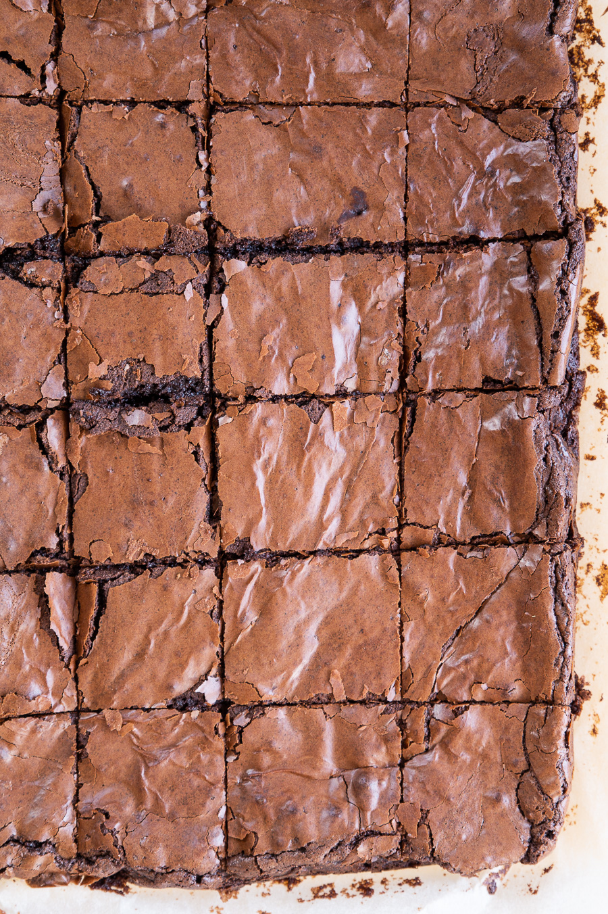

QTs Brownies

Description
This has all been stolen wholesale from QTCinderella at Youtube
I have chosen to steal this recipe because it is definitely the best and easiest brownies to make.
Alot of bang for your buck in this one.
Ingredients
- Unsalted Butter: 113g
- Oil: 1 tablespoon
- Brown Sugar: 100g
- Sugar: 134g
- Eggs: 2
- Flour: 68g
- Cocoa: 50g
- Salt: 1/4 teaspoon
Steps
- Preheat oven to 175 celsius
- Line or oil a 9x9 baking tray
- Mix dry ingredients:
- Flour, Salt and Cocoa
- Soften butter in microwave(cover the bowl or clean the microwave)
- Mix Wet Ingredients
- Butter, Oil, Brown sugar, Regular sugar and Eggs
- Combine wet and dry ingredients
- Pour into the prepared tray and tap out air bubbles
- Bake for 20 mins check if it is still jiggly. If jiggly give 5 more mins then check again.